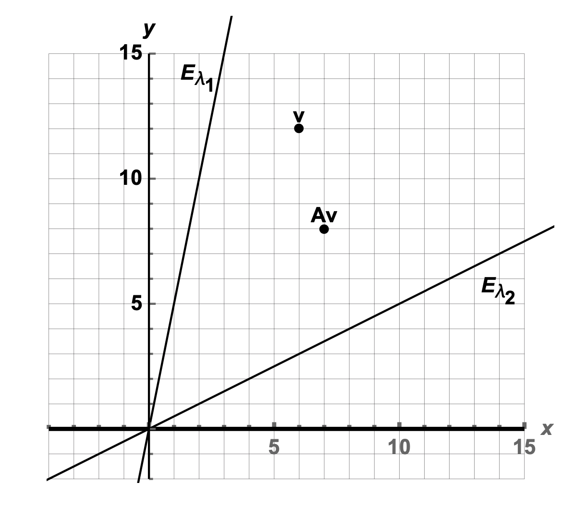

Section 23 Exam 3 Review
23.1 Overview
Our third exam covers eigenvectors and eigenvalues and a little bit of orthogonality. This covers sections 5.1-5.6 and 6.1-6.2.
The exam will be in the same style as the first two exams:
- I will hand it out right away, even a few minutes early, so you can start right on time.
- You must turn it in by 9:35 (for the 8:30 class) and 10:45 for the 10:50 class). No exceptions. The next class needs to come in and get started.
- No calculators are allowed, and none are needed.
- If row reductions are needed, they will be easy (integer) calculations, and there will not be many.
- It will be closed book but you can bring a 3" x 5" note card with notes written on both sides. These notes should be hand written by you. You do not need to turn in the note card with the exam.
- There will be some basic calculations, but the problems will focus more on the ideas than on the calculations.
- I will ask some problems that are very similar to homework problems, Edfinity problems, and examples from class or the videos.
- I will ask other problems that are somewhat different from things you have done. On these, you are to apply your knowledge in a slightly new setting to demonstrate an even higher mastery of the material.
- You will be allowed to re-write one problem to earn back half of the points that you lost. This will be due the class period after I hand the exam back.
- As outlined in the syllabus, syllabus, in your course grade, 3 semester exams will be weighted 13%+13% + 10% = 36% so that your lowest of the three quizzes counts for 10% and your other two scores count 13%.
The best way to study is to do practice problems. The Exam will have calculation problems (like Edfinity) and more conceptual problems (like the problem sets). Here are some ways to practice:
- Make sure that you have mastered the Vocabulary, Skills and Concepts listed below.
- Look over the Edfinity homework assingments
- Look over and redo the class examples problems.
- Look at class examples that we didn’t get to.
- Try to resolve the Problem Sets and compare your answers to the solutions.
- Do the practice problems below. Compare your answers to the solutions.
23.2 Vocabulary, Concepts and Skills
Here are the knowledge and skills you should master by the end of the fifth and sixth weeks.
23.2.1 Skills
Check whether a given vector \(\mathsf{v}\) is an eigenvector for square matrix \(A\).
Find the eigenvalues of a matrix \(2 \times 2\) matrix by hand, using the characteristic equation
Find the eigenvalues of a triangular matrix by inspection.
Given the eigenvalues of matrix \(A\), find the eigenvectors by solving \((A - \lambda I) = \mathbf{0}\).
Find the eigenvalues and eigenvectors of an \(n \times n\) matrix \(A\) by reading RStudio output.
Determine whether a matrix is diagonalizable.
Factor a diagonalizable \(n \times n\) matrix as \(A = PDP^{-1}\) where \(D\) is a diagonal matrix of eigenvalues and \(P\) is the matrix whose columns are the corresponding eigenvectors. You only have to compute \(P^{-1}\) in the 2x2 case.
Compute matrix powers using the diagonalization.
Given the eigenvalues and eigenvectors, factor a \(2 \times 2\) matrix with complex eigenvalues as \(A = P R P^{-1}\) where \(R\) is a rotation-dilation matrix \(\begin{bmatrix} a & -b \\ b & a \end{bmatrix}\) and \(P = [ \mathsf{w}, \mathsf{u}]\) where \(\mathsf{v} = \mathsf{u} + i \mathsf{w}\) is the eigenvector for \(\lambda = a + b i\).
Find the angle of rotation and the scaling factor in a \(2 \times 2\) matrix with complex eigenvalues.
Use the dominant eigenvalue and dominant eigenvector to determine the long-term behavior of a dynamical system.
Use eigenvalues to investigate a population modeled with a Leslie matrix.
Give a close-formula for a dynamical system using the eigen decomposition of a matrix
Find the length of a vector. Find the distance betwen two vectors. Find the cosine of the angle between two vectors.
Find the orthogonal complement of a vector space.
Find the coordinates of a vector in an orthogonal basis.
23.2.2 Vocabulary
I should know and be able to use and explain the following terms or properties.
- eigenvalue, eigenvector and eigenspace
- characteristic equation
- diagonalizable matrix
- similar matrices
- algebraic multiplicity of an eigenvalue
- geometric multiplicity of an eigenvalue
- rotation-dilation matrix
- discrete dynamical system
- trajectory
- dominant eigenvalue and dominant eigenvector
- population model
- Leslie matrix
23.2.3 Conceptual Thinking
I should understand and be able to explain the following concepts:
An eigenspace of \(A\) is a subspace that is fixed under the linear transformation \(T(\mathsf{x}) = A \mathsf{x}\).
An eigenvalue \(\lambda\) with \(1 <| \lambda |\) corresponds to expansion.
An eigenvalue \(\lambda\) with \(0 < | \lambda | < 1\) corresponds to contraction.
A complex eigenvalue corresponds to a rotation in a 2D subspace.
The eigenspace for \(\lambda\) is the subspace \(E_\lambda = \mathrm{Nul}(A - \lambda I)\).
A matrix is not diagonalizable when it has an eigenvalue whose algebraic multiplicity is larger than its geometric multiplicity.
The long-term behavior of a dynamical system is determined by its dominant eigenvalue and eigenvector.
Population model predicts one of: long term growth, extinction, convergence to a stable population.
23.3 Practice Problems
23.3.1
Consider the \(3 \times 3\) matrix \[ A = \left[ \begin{array}{rrr} 2 & -1 & 0 \\ 0 & 1 & 0 \\ -2 & 5 & -2 \\ \end{array} \right] \] with characteristic equation \[ p(\lambda) = -(\lambda -1)(\lambda -2)(\lambda +2). \] Find the eigenvalues and corresponding eigenvectors for \(A\).
23.3.2
Let \(A\) be a \(2 \times 2\) matrix. We view \(A\) as a linear transformation from \(\mathbb{R}^2\) to \(\mathbb{R}^2\). Describe the eigenvalues for each of the following types of matrices.
- \(A\) maps all of \(\mathbb{R}^2\) onto a line through the origin in \(\mathbb{R}^2\).
- \(A\) is a reflection of \(\mathbb{R}^2\) over the line \(y = x\).
- \(A\) is a reflection of \(\mathbb{R}^2\) through the origin; that is, it sends \((x,y)\) to \((-x,-y)\).
- \(A\) is a horizontal shear of the form d form \[ \begin{bmatrix} 1 & a \\ 0 & 1 \end{bmatrix} \begin{bmatrix} x \\ y \end{bmatrix} = \begin{bmatrix} x + a y \\ y \end{bmatrix} \]
23.3.3
Below are the eigenvalues of four different \(5 \times 5\) matrices. For each, decide if the matrix is invertible and if it is diagonalizable. Answer Yes, No or “Not enough information to determine this.”
- \(A\) has eigenvalues \(\lambda = -4, -3,0,1, 2\)
- \(B\) has eigenvalues \(\lambda = -3, -1, 1, \sqrt{2}, 8.\)
- \(C\) has eigenvalues \(\lambda = 1, 2, 2, 7, 8.\)
- \(D\) has eigenvalues \(\lambda = -1, 0, 3,3, 10\)
23.3.4
Here the diagonalization of a matrix: \[ \mathsf{A}=\left[ \begin{array}{ccc} 5 & 2 & -1 \\ 2 & 1 & 0 \\ -1 & 0 & 1 \\ \end{array} \right] = \left[ \begin{array}{ccc} -5 & 0 & 1 \\ -2 & 1 & -2 \\ 1 & 2 & 1 \\ \end{array} \right] \left[ \begin{array}{ccc} 6 & 0 & 0 \\ 0 & 1 & 0 \\ 0 & 0 & 0 \\ \end{array} \right]\left[ \begin{array}{ccc} -\frac{1}{6} & -\frac{1}{15} & \frac{1}{30} \\ 0 & \frac{1}{5} & \frac{2}{5} \\ \frac{1}{6} & -\frac{1}{3} & \frac{1}{6} \\ \end{array} \right]. \]
Is the matrix \(\mathsf{A}\) invertible?
Find a nonzero vector in \(\mathrm{Nul}(\mathsf{A})\) if one exists.
Find a steady-state vector \(\mathsf{v}\) such that \(\mathsf{A} \mathsf{v} = \mathsf{v}\) if one exists.
Give the coordinates of \(\mathsf{v} = [1,2,3]^T\) in the eigenbasis without row reductions.
Find a formula for \(\mathsf{A}^{2021} \mathsf{v}\) if \(\mathsf{v} = [1,2,3]^T\) in terms of the eigenbasis.
23.3.5
The eigensystem of matrix \(A\) is given below. It has complex eigenvalues. \[ \begin{bmatrix} 3 & -5 \\ 1 & -1 \end{bmatrix}, \qquad \lambda = 1 \pm i, \qquad v = \begin{bmatrix} 2 \\ 1 \end{bmatrix} \pm \begin{bmatrix} 1 \\ 0 \end{bmatrix} i. \] a. What angle does it rotate by? b. What factor does it scale by? c. Factor it as \(A = P R P^{-1}\) where \(R\) is a rotation-dilation matrix.
23.3.6
Using the matrix \(B = \begin{bmatrix} .97 & -.71 \\ .71 & .97 \end{bmatrix}\) and the starting vector \(\mathsf{v} = \begin{bmatrix} 1 \\ 0 \end{bmatrix}\), I plotted the points \[\mathsf{v}, B \mathsf{v}, B^2\mathsf{v}, B^3 \mathsf{v}, \ldots.\] I saw that these points are, roughly, going around in a circle.
How many multiplications by \(B\) does it take to get back around to the positive \(x\)-axis?
When I come full circle, am I closer to the origin, farther from the origin, or the same distance to the origin?
23.3.7
For each matrix below, decide if it is diagonalizable. You do not need to diagonalize the matrix (though you can!), but you must give a reason for why the matrix is or is not diagonalizable.
\(A = \begin{bmatrix} 0 & -4 & 2 \\ 2 & -4 & -1 \\ -6 & 4 & 7 \end{bmatrix}\) has eigenvalues \(4, -1, 0\).
\(B = \begin{bmatrix} 3 & -1 & 2 \\ -1 & 3 & 2 \\ 2&2 & 0 \end{bmatrix}\) has eigenvalues \(4,4,-2\).
23.3.8
Consider the matrix with eigenvalues and eigenvectors \[ A = \begin{bmatrix} 0.7 & 0.2 \\ 0.3 & 0.8 \end{bmatrix} \qquad \begin{array}{cc} \lambda_1 = 1 & \lambda_2 = .5 \\ \mathsf{v}_1 = \begin{bmatrix} 2 \\ 3 \end{bmatrix} & \mathsf{v}_2 = \begin{bmatrix} 1 \\ -1 \end{bmatrix} \end{array} \]
- Diagonalize \(A\).
- What can you say about \(\displaystyle{\lim_{n \to \infty}} A^n\)?
- Give a formula for \(A^n \mathsf{x}_0\) if \(\mathsf{x}_0 = \begin{bmatrix} 25 \\ 0 \end{bmatrix}\) in terms of the eigenbasis.
- What is \(\displaystyle{\lim_{n \to \infty}} A^n \begin{bmatrix} 25 \\ 0 \end{bmatrix}\)?
23.3.9
The matrix \(A\) below has the given eigenvalues and eigenvectors. \[ A = \left[ \begin{array}{cc} \frac{1}{2} & \frac{1}{5} \\ -\frac{2}{5} & \frac{9}{10} \\ \end{array} \right] \qquad \begin{array}{c} \lambda = .7 \pm .2 i \\ \mathsf{v} = \begin{bmatrix} \frac{1}{2} \\ 1 \end{bmatrix} \pm \begin{bmatrix} -\frac{1}{2} \\ 0 \end{bmatrix} i \end{array}\hskip5in \]
- Factor \(A=PRP^{-1}\) where \(R\) is a rotation-dilation matrix.
- What is the angle of rotation?
- What is the factor of dilation?
23.3.10
In a 1962 study of rainfall in Tel Aviv, it was determined that if today is a wet day, then the probability that tomorrow will be wet is 0.662 and the probability that tomorrow it will be dry is 0.338. If today is a dry day, then the probability that tomorrow is wet is 0.250 and the probability that tomorrow is dry will be 0.75. From this I computed the following: \[ A = \begin{bmatrix} 0.662 & 0.25 \\ 0.338 & 0.75\end{bmatrix}; \qquad \begin{array}{cc} \lambda_1 = 1.0 & \lambda_2 = 0.412 \\ \mathsf{v}_1 = \begin{bmatrix}-0.595 \\ -0.804 \end{bmatrix} & \quad \mathsf{v}_2 = \begin{bmatrix}-0.707\\ 0.707 \end{bmatrix} \end{array} \]
- If Monday is a dry day, what is the probability that Wednesday will be wet?
- In the long-run, what is the distribution of wet and dry days?
23.3.11
A population of female bison is split into three groups: juveniles who are less than one year old; yearlings between one and two years old; and adults who are older than two years. Each year,
* 80% of the juveniles survive to become yearlings.
* 90% of the yearlings survive to become adults.
* 80% of the adults survive.
* 40% of the adults give birth to a juvenileLet \(\mathsf{x}_t = \begin{bmatrix} J_t \\ Y_t \\ A_t \end{bmatrix}\) be the state of the system in year \(t\).
- Find the Leslie matrix \(L\) such that \(\mathsf{x}_{t+1} = B \mathsf{x}_t.\).
- Find the eigenvalues of \(L\).
- The matrix \(L\) has two complex eigenvalues and one real eigenvalue. How do the complex eigenvectors manifest in the trajectory of a population?
- What is the long-term behavior of the herd? Will the size of the herd grow, stablilize or shrink? What will be the proportions of juveniles, yearlings and adults in the herd?
23.3.12
Let \(A\) and \(B\) be \(n \times n\) matrices. Suppose that \(v\) is an eigenvector of \(A\) with eigenvalue \(\lambda\) and \(v\) is an eigenvector of \(B\) with eigenvalue \(\mu\) such that \(\lambda \not= \mu\). Is \(v\) an eigenvector of either of the matrices below? If so give its eigenvalue.
- \(A + B\)
- \(AB\)
23.3.13
Suppose that \(A\) is invertible.
Show that if \(v\) is an eigenvector of \(A\) with eigenvalue \(\lambda\), then \(v\) is an eigenvector of \(A^{-1}\) with eigenvalue \(1/\lambda\).
If \(A\) is diagonalizable with diagonalization \(A = P D P^{-1}\), then show that \(A^{-1}\) is diagonalizable and find its diagonalization from that of \(A\).
23.3.14
Suppose that \(A\) is an \(n \times n\) matrix with eigenvector \(\vec w\) of eigenvalue 5 and eigenvector \(\vec v\) of eigenvalue -3.
Is \(\vec v + \vec w\) an eigenvector of \(A\), and if so, what is its eigenvalue?
Is \(2021 \vec v\) an eigenvector of \(A\), and if so what is its eigenvalue?
Is \(\vec w\) an eigenvector of \(A^2\), and if so what is its eigenvalue?
Is \(\vec v\) an eigenvector of \(A - 2021 I_n\) and if so, what is its eigenvalue?
23.3.15
\(A\) is a \(2 \times 2\) matrix that sends \(v\) to \(A v\) as shown in the plot below with its two eigenspaces \(E_{\lambda_1}\) and \(E_{\lambda_2}\).
Estimate, as accurately as possible from the given information, the eigenvalues \(\lambda_1\) and \(\lambda_2\).
Indicate on the plot above where \(A^2 v\) will be.
What happens in the limit: \(\displaystyle{\lim_{n\to \infty} }A^n v\)?
If \(A^n v = \begin{bmatrix} x_n \\ y_n \end{bmatrix}\) what happens to the ratio \(x_n/y_n\) as \(n\) grows larger and larger?

23.3.16
Consider vectors \(\mathsf{v}_1 = \begin{bmatrix} 1 \\ 1 \\-1 \end{bmatrix}\) and \(\mathsf{v}_2= \begin{bmatrix} 1 \\ 2 \\ 3 \end{bmatrix}\) in \(\mathbb{R}^3\). Let \(W=\mbox{span}(\mathsf{v}_1, \mathsf{v}_2)\).
Show that \(\mathsf{v}_1\) and \(\mathsf{v}_2\) are orthogonal.
Find a basis for \(W^{\perp}\).
23.3.17
Let \(W\) be the span of the vectors \[ \begin{bmatrix} 1 \\ -2 \\ 1 \\ 0 \\1 \end{bmatrix}, \quad \begin{bmatrix} -1 \\ 3 \\ -1 \\ 1 \\ -1 \end{bmatrix}, \quad \begin{bmatrix} 0 \\ 0 \\ 1 \\ 3 \\1 \end{bmatrix}, \quad \begin{bmatrix} 0 \\ 2 \\ 0 \\ 0 \\4 \end{bmatrix} \]
- Find a basis for \(W\). What is the dimension of this subspace?
- Find a basis for \(W^{\perp}\)
23.3.18
Let \(P\) be the vector space of palendromic vectors from Exam 2. See below. Find \(P^\perp\).
\[ P = \left\{\ \begin{bmatrix} a \\ b \\ c \\ b \\ a \end{bmatrix} \quad \mid \quad a,b,c \in \mathbb{R}\ \right\}. \]
23.3.19
In the Fibonacci vector space problem, we use the basis below \[ F = span \left\{ \begin{bmatrix} 1 \\ 0 \\ 1 \\ 1 \\ 2 \end{bmatrix}, \begin{bmatrix} 0 \\ 1 \\ 1 \\ 2 \\ 3 \end{bmatrix}\right\} \]
What is the cosine of the angle between the two basis vectors?
What is the distance between the two basis vectors?
23.3.20
Find a basis for the plane that is orthogonal to the vector \[ v = \begin{bmatrix} 1 \\ 2 \\ 3 \end{bmatrix}. \]
23.3.21
What does the following matrix product tell us? \[ \underbrace{\left[\begin{array}{cccc} 1 & 1 & 2 & 3 \\ 8 & 8 & 1 & -6 \\ -6 & 5 & 2 & -1 \\ 0 & 1 & -2 & 1 \\ \end{array}\right]}_{A^T} \underbrace{\left[\begin{array}{cccc} 1 & 8 & -6 & 0 \\ 1 & 8 & 5 & 1 \\ 2 & 1 & 2 & -2 \\ 3 & -6 & -1 & 1 \\ \end{array}\right]}_A= \left[\begin{array}{cccc} 15 & 0 & 0 & 0 \\ 0 & 165 & 0 & 0 \\ 0 & 0 & 66 & 0 \\ 0 & 0 & 0 & 6 \\ \end{array} \right] \] Use the dot-product formula to find the coordinates of the vector \(v = (1,1,1,1)^T\) with respect to the vectors in the columns of \(A\).
23.4 Solutions to Practice Problems
23.4.1
There are three eigenvalues: 1, 2, and \(-2\). We find an eigenvector for each of them. * Eigenvalue \(\lambda = 1\) \[ A - I = \left[ \begin{array}{rrr} 1 & -1 & 0 \\ 0 & 0 & 0 \\ -2 & 5 & -3 \\ \end{array} \right] \sim \left[ \begin{array}{rrr} 1 & -1 & 0 \\ 0 & 3 & -3 \\ 0 & 0 & 0 \\ \end{array} \right] \sim \left[ \begin{array}{rrr} 1 & -1 & 0 \\ 0 & 1 & -1 \\ 0 & 0 & 0 \\ \end{array} \right] \sim \left[ \begin{array}{rrr} 1 & 0 & -1 \\ 0 & 1 & -1 \\ 0 & 0 & 0 \\ \end{array} \right] \] So one eigenvector is \([1,1,1]^{\top}\)
Eigenvalue \(\lambda = 2\) \[ A - 2I = \left[ \begin{array}{rrr} 0 & -1 & 0 \\ 0 & -1 & 0 \\ -2 & 5 & -4 \\ \end{array} \right] \sim \left[ \begin{array}{rrr} -2 & 5 & -4 \\ 0 & -1 & 0 \\ 0 & 0 & 0 \\ \end{array} \right] \sim \left[ \begin{array}{rrr} -2 & 0 & -4 \\ 0 & 1 & 0 \\ 0 & 0 & 0 \\ \end{array} \right] \sim \left[ \begin{array}{rrr} 1 & 0 & 2 \\ 0 & 1 & 0 \\ 0 & 0 & 0 \\ \end{array} \right] \] So one eigenvector is \([-2,0,1]^{\top}\)
Eigenvalue \(\lambda = -2\) \[ A - 2I = \left[ \begin{array}{rrr} 4 & -1 & 0 \\ 0 & 3 & 0 \\ -2 & 5 & 0 \\ \end{array} \right] \sim \left[ \begin{array}{rrr} 4 & 0 & 0 \\ 0 & 1 & 0 \\ -2 & 0 & 0 \\ \end{array} \right] \sim \left[ \begin{array}{rrr} 1 & 0 & 0 \\ 0 & 1 & 0 \\ 0 & 0 & 0 \\ \end{array} \right] \] So one eigenvector is \([0,0,1]^{\top}\)
23.4.2
In this problem, we are to think about the geometry of a 2D transformation, and see if we can find any vectors which get re-scaled by the transformation. The direction of these vectors cannot change (other than to flip to the opposite direction).
This maps all of \(\mathbb{R}^2\) to a line. Therefore it is not one-to-one, nor onto, and so it is not invertible. This means that \(\lambda = 0\) is an eigenvalue Any vector that is already on the line must stay on the line, so it is an eigenvector, but we don’t know its eigenvalue. Thus, the eigenvalues are \(\lambda_1 = 0\) and \(\lambda_2\) we don’t know.
There are two kinds of eigenvectors. Those vectors on the line are fixed, so they are eigenvectors of eigenvalue 1. Vectors that are perpendicular to the line get sent to their negatives, so they are eigenvectors of eigenvalue \(-1\). Thus, the eigenvalues are \(\lambda_1 = 1\) and \(\lambda_2=-1\).
In this transformation, every vector gets sent to its negative. \[ T\left( \begin{bmatrix} x_1 \\ x_2 \end{bmatrix} \right) = \begin{bmatrix} -x_1 \\ -x_2 \end{bmatrix} = \begin{bmatrix} -1 & 0 \\ 0 & -1 \end{bmatrix} \begin{bmatrix} x_1 \\ x_2 \end{bmatrix} \] This means that every vector is an eigenvector of eigenvalue \(-1\). The eigenvalues are \(\lambda_1 = \lambda_2=-1\).
A horizontal shear (we did not talk about these very much) has a matrix of the form \[ \begin{bmatrix} 1 & a \\ 0 & 1 \end{bmatrix} \begin{bmatrix} x \\ y \end{bmatrix} = \begin{bmatrix} x + a y \\ y \end{bmatrix} \] It fixes the \(x\)-axis since \((x,0)^\top\) maps to \((x,0)^\top\), but no other directions are fixed. You can see by the fact that the matrix is upper triangluar that the eigenvalues are on the diagonal and are \(\lambda_1 = \lambda_2 = 1\). Note: if you calculate, you find that the geometric multiplicity of \(\lambda = 1\) is 1 (only the \(x\)-axis), and this matrix is not diagonalizable. The only eigenspace is the \(x\)-axis.
23.4.3
- \(A\) is not invertible because \(0\) is an eigenvalue. \(A\) is diagonalizable because it have 5 distinct eigenvalues.
- \(B\) is invertible because \(0\) is not an eigenvalue. \(B\) is diagonalizable because it have 5 distinct eigenvalues.
- \(C\) is invertible because \(0\) is not an eigenvalue. We cannot tell whether \(C\) is diagonalizable without more information. The eigenvalue \(\lambda=2\) has algebraic multiplicity 2. We need to know whether the geometric multiplicity is 1 or 2.
- \(D\) is not invertible because \(0\) is an eigenvalue. We cannot tell whether \(D\) is diagonalizable without more information. The eigenvalue \(\lambda=3\) has algebraic multiplicity 2. We need to know whether the geometric multiplicity is 1 or 2.
23.4.4
- No, \(A\) is not invertible because \(0\) is an eigenvalue.
- \(\mathsf{v} = [1, -2, 1]^{\top}\) is an eigenvector for \(\lambda=0\). Therefore \(\mathsf{v} \in \mbox{Nul}(A)\).
- The vector \(\mathsf{v} = [0,1,2]^{\top}\) is an eigenvector for \(\lambda=1\). So this is a steady-state vector. (However, the dynamical system will not converge to this steady state because \(\lambda=6\) is the dominant eigenvalue.)
- When \(A=P D P^{-1}\), we can find the coordinates of a vector with respect to the eigenbasis via multiplication by \(P^{-1}\).
Pinv =cbind(c(-1/6,0,1/6),c(-1/15,1/5,-1/3),c(1/30,2/5,1/6))
v = c(1,2,3)
Pinv %*% v## [,1]
## [1,] -0.2
## [2,] 1.6
## [3,] 0.0So \([ \mathsf{v}]_{\mathcal{B}} = [-1/5, 8/5, 0]^{\top}\).
- \(-\frac{1}{5} \cdot 6^{2021} \cdot \begin{bmatrix} -5 \\ -2 \\ 1 \end{bmatrix} + \frac{8}{5} \cdot \begin{bmatrix} 0 \\ 1 \\ 2 \end{bmatrix}\)
23.4.5
This system scales by \(\sqrt{1+1} = \sqrt{2}\) and it rotates by \(\tan^{-1} (1/1) = \pi/4\).
23.4.6
We have \[ \begin{bmatrix} a & -b \\ b & a \end{bmatrix} = \begin{bmatrix} .97 & -.71\\ .71 & .97 \end{bmatrix} \] Let’s turn to RStudio
a = .97
b = .71
(scale = sqrt(a^2+b^2))## [1] 1.202082(angle = atan (b/a))## [1] 0.6318544angle/(2*pi)*360## [1] 36.202592 * pi / angle## [1] 9.94404- It takes 10 iterations to rotate past the \(x\)-axis.
- We are further from the origin because \(| \lambda| \approx 1.2 > 1\).
23.4.7
- The matrix \(A\) is diagonalizable because it has 3 distinct eigenvalues
- We must see whether \(\lambda=4\) has geometric multiplicty 2 (to match its algebraic multiplicity).
rref( cbind(c(-1,-1,2), c(-1,-1,2), c(2,2,-4)))## [,1] [,2] [,3]
## [1,] 1 1 -2
## [2,] 0 0 0
## [3,] 0 0 0We see that \(B - 4I\) has two free columns, so \(\dim ( \mbox{Nul}(B-4I))=2\). This means that \(\lambda=4\) has geometric multiplicity 2. Therefore \(B\) is diagonalizable.
23.4.8
- We set \(P = \begin{bmatrix} 2 & 1 \\ 3 & -1 \end{bmatrix}\). So \[ P^{-1} = - \frac{1}{5} \begin{bmatrix} -1 & -1 \\ -3 & 2 \end{bmatrix} = \begin{bmatrix} 0.2 & 0.2 \\ 0.6 & -0.4 \end{bmatrix} \] Or we can find this inverse using RStudio.
A = cbind(c(2,3),c(1,-1))
solve(A)## [,1] [,2]
## [1,] 0.2 0.2
## [2,] 0.6 -0.4Therefore \[ A = \begin{bmatrix} 0.7 & 0.2 \\ 0.3 & 0.8 \end{bmatrix} = \begin{bmatrix} 2 & 1 \\ 3 & -1 \end{bmatrix} \begin{bmatrix} 1 & 0 \\ 0 & 0.5 \end{bmatrix} \begin{bmatrix} 0.2 & 0.2 \\ 0.6 & -0.4 \end{bmatrix} \]
- We compute this as follows:
\[ A^n = \begin{bmatrix} 2 & 1 \\ 3 & -1 \end{bmatrix} \begin{bmatrix} 1 & 0 \\ 0 & 0.5 \end{bmatrix}^n \begin{bmatrix} 0.2 & 0.2 \\ 0.6 & -0.4 \end{bmatrix}= \begin{bmatrix} 2 & 1 \\ 3 & -1 \end{bmatrix} \begin{bmatrix} 1^n & 0 \\ 0 & 0.5^n \end{bmatrix} \begin{bmatrix} 0.2 & 0.2 \\ 0.6 & -0.4 \end{bmatrix} \] so \[ \lim_{n\to \infty} A^n = \begin{bmatrix} 2 & 1 \\ 3 & -1 \end{bmatrix} \begin{bmatrix} 1 & 0 \\ 0 & 0 \end{bmatrix} \begin{bmatrix} 0.2 & 0.2 \\ 0.6 & -0.4 \end{bmatrix} =\begin{bmatrix} 0.4 & 0.4 \\ 0.6 & 0.6 \end{bmatrix} \]
- We need to find the coefficients for \(x_0 = [25, 0]^{\top}\).
P = cbind(c(2,3), c(1,-1))
v = c(25,0)
solve(P,v)## [1] 5 15So the formula is \[ 5 \begin{bmatrix} 2 \\ 3 \end{bmatrix} + 15 \left( \frac{1}{2} \right)^n \begin{bmatrix} 1 \\ -1 \end{bmatrix} \]
- This converges to \(5 \begin{bmatrix} 2 \\ 3 \end{bmatrix}\).
23.4.9
- We have \[ A = \left[ \begin{array}{cc} \frac{1}{2} & \frac{1}{5} \\ -\frac{2}{5} & \frac{9}{10} \\ \end{array} \right] = \begin{bmatrix} -1/2 & 1/2 \\ 0 & 1 \end{bmatrix} \begin{bmatrix} 0.7 & -0.2 \\ 0.2 & 0.7 \end{bmatrix} \begin{bmatrix} -2 & 1 \\ 0 & 1 \end{bmatrix} \] Here are some R calculations to check the answer for (a) and to find the values for (b) and (c).
A = cbind(c(1/2,-2/5), c(1/5,9/10))
A## [,1] [,2]
## [1,] 0.5 0.2
## [2,] -0.4 0.9eigen(A)## eigen() decomposition
## $values
## [1] 0.7+0.2i 0.7-0.2i
##
## $vectors
## [,1] [,2]
## [1,] 0.4082483-0.4082483i 0.4082483+0.4082483i
## [2,] 0.8164966+0.0000000i 0.8164966+0.0000000iP = cbind(c(-1/2,0),c(1/2,1))
C = cbind(c(.7,.2),c(-.2,.7))
Pinv = solve(P)
Pinv## [,1] [,2]
## [1,] -2 1
## [2,] 0 1P %*% C %*% Pinv## [,1] [,2]
## [1,] 0.5 0.2
## [2,] -0.4 0.9atan(.2/.7)## [1] 0.2782997sqrt(.7^2 + .2^2)## [1] 0.728011- The angle of rotation is \(\tan^{-1} (.2/.7) = 0.278\) radians
- The dilation factor is \(\sqrt{0.49 + 0.04} = \sqrt{0.53} = 0.728\).
23.4.10
Let’s use RStudio.
A = cbind(c(0.662, 0.338),c(0.25, 0.75))
A %*% A %*% c(0,1)## [,1]
## [1,] 0.353
## [2,] 0.647v1 = c(-0.595, -0.804 )
v1/sum(v1)## [1] 0.4253038 0.5746962- If Monday is dry, then the probability of a wet Wednesday is \(0.353\). The easiest way to calculate this \(A^2 \begin{bmatrix} 1 \\ 0 \end{bmatrix}.\)
- In the long run, \(42.5\%\) of days are wet and \(57.5\%\) of days are dry.
23.4.11
- Here is the Leslie matrix, as well as some eigensystem computations.
L = cbind(c(0,.8,0),c(0,0,.9),c(.4,0,.8))
L## [,1] [,2] [,3]
## [1,] 0.0 0.0 0.4
## [2,] 0.8 0.0 0.0
## [3,] 0.0 0.9 0.8(vals = eigen(L)$values)## [1] 1.0575217+0.0000000i -0.1287609+0.5057227i -0.1287609-0.5057227iMod(vals)## [1] 1.0575217 0.5218571 0.5218571vecs = eigen(L)$vectors
v = vecs[,1]
Re(v/sum(v)) # get it to sum to 1 AND remove the 0 imaginary part## [1] 0.2272578 0.1719172 0.6008250- The eigenvalues are \(1.058, -0.129 \pm 0.506 i\). The complex eigenvalues have length 0.52, so they shrink away pretty quickly.
- If we start outside of the span of the dominant eigenvalue, then the trajectory oscillate slightly until it settles into the direction of the dominant eigevector, with an overall growth trend of \(1.058\), or \(5.8\%\).
- The size of the herd grows. The proportions are \([0.227, 0.172, 0.601]\).
23.4.12
\((A + B) v = A v + B v = \lambda v + \mu v = (\lambda + \mu) v\), so yes, \(v\) is an eigenvector of \(A+B\) of eigenvalue \(\lambda + \mu\).
\(A B v = A (B v) = A (\mu v) = \mu (A v) = \mu \lambda v\), so yes, \(v\) is an eigenvector of \(AB\) of eigenvalue \(\lambda\mu\).
23.4.13
- We are given \(A v = \lambda v\). Thus,
\[ \begin{array}{cccl} A v & = & \lambda v & \text{given} \\ A^{-1} A v & = & \lambda A^{-1} v & \text{multiply on the left by $A^{-1}$} \\ v & = & \lambda A^{-1} v \\ \frac{1}{\lambda} v & = & A^{-1} v \\ \end{array} \] This shows that \(A^{-1} v = \frac{1}{\lambda} v\) so \(v\) is an eigenvector of \(A^{-1}\) with eigenvalue \(\frac{1}{\lambda}\)
- (method 1) If \(A\) is diagonal, then there is a basis \(\{v_1, v_2, \ldots, v_n\}\) of eigenvectors of \(A\) with eigenvalues \(\lambda_1, \lambda_2, \ldots, \lambda_n\). By the previous part, \(\{v_1, v_2, \ldots, v_n\}\) are eigenvectors of \(A^{-1}\) with eigenvalues \(1/\lambda_1, 1/\lambda_2, \ldots, 1/\lambda_n\). Thus \(A^{-1}\) has the same eigenbasis, and the diagonalization of \(A^{-1}\) is \[ A^{-1} = \underbrace{ \begin{bmatrix} \vert &\vert &&\vert \\ v_1 & v_2 & \cdots & v_n \\ \vert &\vert &&\vert \\ \end{bmatrix} }_P \begin{bmatrix} 1/\lambda_1 & & & \\ & 1/\lambda_2 & & \\ & & \ddots \\ & & & 1/\lambda_n \\ \end{bmatrix} P^{-1} \] (method 2) If \(A = P D P^{-1}\) then by the fact that the order reverses when computing inverses (the shoes-and-socks property), we have \(A^{-1} = (P D P^{-1})^{-1} = (P^{-1})^{-1} D^{-1} P^{-1} = P D^{-1} P^{-1}.\) Furthermore \(D^{-1}\) is a diagonal matrix such that \[ \text{if} \qquad D = \begin{bmatrix} \lambda_1 & & & \\ & \lambda_2 & & \\ & & \ddots & \\ & & & \lambda_n \\ \end{bmatrix} \qquad\text{then}\qquad D^{-1} = \begin{bmatrix} 1/\lambda_1 & & & \\ & 1/\lambda_2 & & \\ & & & \ddots & \\ & & & & 1/\lambda_n \\ \end{bmatrix} \] Note that \(A\) is invertible, 0 is not an eigenvalue, so each \(1/\lambda_i\) does not cause division by 0.
23.4.14
We are given that \(A w = 5 w\) and \(A v = -3 v\).
\(A (v + w) = A v + A w = -3 v + 5 w \not = \lambda(v + w)\) for any \(\lambda\), so \(v + w\) is not an eigenvector of \(A\). Note: it would be if they had the same eigenvalue.
\(A (2021 v) = 2021 A v = 2021 (-3) v = (-3) (2021 v)\) so \(2021 v\) is an eigenvector also of eigenvalue \(-3\).
\(A^2 w = A (A w) = A (5 w) = 5 (A w) = 5 (5 w) = 25 w\), so \(w\) is an eigenvector of \(A^2\) of eigenvalue 25.
\((A - 2021I_n)v = A v - 2021 I_n v = -3 v - 2021 v = -2024 v\), so \(v\) is an eigenvector of \((A - 2021I_n)\) of eigenvalue \(-2024\).
23.4.15
Will discuss in class on Friday 11/18.
23.4.16
Will discuss in class on Friday 11/18.
23.4.17
Put the vectors in the rows of a matrix and row reduce. Then \(W\) is the row space of this matrix. \[ \begin{bmatrix} 1 & -2 & 1 & 0 & 1 \\ -1 & 3 & -1 & 1 & -1 \\ 0 & 0 & 1 & 3 & 1 \\ 0 & 2 & 0 & 0 & 4 \end{bmatrix}\rightarrow \begin{bmatrix} 1 & -2 & 1 & 0 & 1 \\ 0 & 1 & 0 & 1 & 0 \\ 0 & 0 & 1 & 3 & 1 \\ 0 & 2 & 0 & 0 & 4 \end{bmatrix}\rightarrow \begin{bmatrix} 1 & -2 & 1 & 0 & 1 \\ 0 & 1 & 0 & 1 & 0 \\ 0 & 0 & 1 & 3 & 1 \\ 0 & 0 & 0 & -2 & 4 \end{bmatrix} \]
\[ \rightarrow \begin{bmatrix} 1 & -2 & 1 & 0 & 1 \\ 0 & 1 & 0 & 1 & 0 \\ 0 & 0 & 1 & 3 & 1 \\ 0 & 0 & 0 & 1 & -2 \end{bmatrix}\rightarrow \begin{bmatrix} 1 & -2 & 1 & 0 & 1 \\ 0 & 1 & 0 & 0 & 2 \\ 0 & 0 & 1 & 0 & 7 \\ 0 & 0 & 0 & 1 & -2 \end{bmatrix}\rightarrow \begin{bmatrix} 1 & -2 & 0 & 0 & -6 \\ 0 & 1 & 0 & 0 & 2 \\ 0 & 0 & 1 & 0 & 7 \\ 0 & 0 & 0 & 1 & -2 \end{bmatrix} \]
\[ \rightarrow \begin{bmatrix} 1 & 0 & 0 & 0 & -2 \\ 0 & 1 & 0 & 0 & 2 \\ 0 & 0 & 1 & 0 & 7 \\ 0 & 0 & 0 & 1 & -2 \end{bmatrix} \] Let’s check our work in R:
## [,1] [,2] [,3] [,4] [,5]
## [1,] 1 0 0 0 -2
## [2,] 0 1 0 0 2
## [3,] 0 0 1 0 7
## [4,] 0 0 0 1 -2Thus, the dimension of \(W\) is 4 and the dimension of \(W^\perp\) is 1 and it is spanned by the vector below \[ W^\perp = span\left\{ \begin{bmatrix} 2 \\ -2 \\ -7 \\ 2 \\ 1 \end{bmatrix}\right\}. \]
23.4.18
Will discuss in class on Friday 11/18.
23.4.19
Will discuss in class on Friday 11/18.
23.4.20
The vector \(v\) is a basis for the line \(L\) that is spanned by \(v\). Make \(v\) be the row of a matrix \(A\) (a 1x3 matrix) and find its null space.
23.4.21
The product \(A^T A\) being a diagonal matrix tells us that the vectors in the columns of \(A\) are orthogonal (but not orthonormal). This means that you can use the nice dot product formula to find the coefficients of \(v\) with respects to the basis in the columns of \(A\).